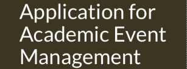

Projects:
Project Name:
Academic Event Management System

Project Description:
As the name indicates, Academic Event Management application is a database driven, web application designed to manage academic events. This online event management system can store all information on
events, event types and users. The system also helps to manage organizers or attendees, presenters,
keynote speakers, and sponsors related to the event.
This web application helps users to register information (first name, last name, email,
phone number, password) and store information securely in the database. Users are authenticated based on their email and password. Organizers have the ability to add new events to the system.
The system supports management of existing events and update event details like canceling events, closing events, or reschedule events. The application has the capability for scheduling event details so it can be made public at a specific time. Application can also display a complete list of
presenters, keynote speakers, and sponsors, etc upon request.
Technologies used:
The Academic Event Management system is a web based application and for the front-end HTML, CSS and JavaScript are used. The back is supported by the use of open source database system MySQL.
Git was used for managing programs and related files. The main tool used for group communications was Discord.
Challenges faced:
Academic Event Management project was team effort. Finalizing the database specifications took sometime as the web application requirements keep on changing, but eventually the design stabilized.
Developing the web application for different devices and browsers were another challenge.
Outcome:
Development, testing and deployment of project Academic Event Management was completed successfully.